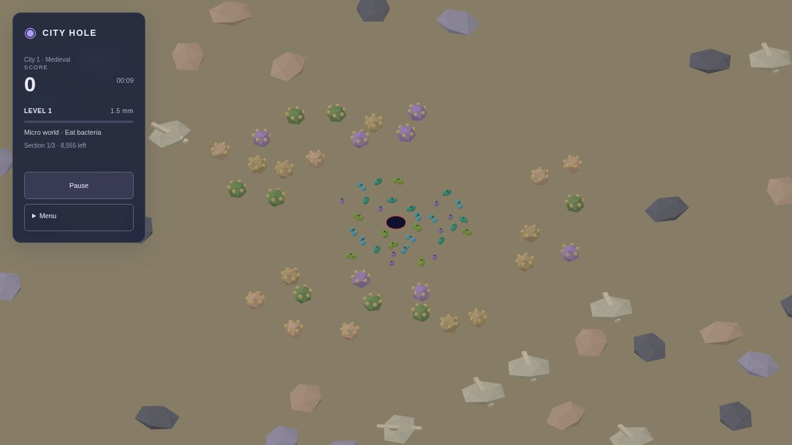

The five microscopic tiers now contain 213 authored items rather than 71: bacteria 33, spores 30, dust 39, pollen 54 and sand 57. Loose seeded clusters vary angle, distance and orientation. Rejection spacing prevents same-tier overlaps; separated size bands keep larger colliders off the earlier food. The seed is reproducible, with different layouts for each city.

The complete pre-generated world is the root cell. Each occupied cell recursively subdivides into a 3×3 grid. Empty cells have no allocated node. Small objects reach the deepest layer (configured minimum 0.08 units); larger objects stay in coarser cells that accommodate their dimensions.
Every frame, the renderer queries the camera's ground footprint, a 40% view-size margin and another 60% ahead in the direction of travel. Tree selection adds a neighboring-cell ring. As the hole grows, larger parent cells become the query unit. Child models are collected once; existing whole-block models replace their members at block scale. Offscreen preloaded models remain in memory but are frustum-culled for drawing.
New geometry is not created below the highest edible tier minus five, including the capture/fall path. Already-loaded geometry can stay until it leaves the preload region. This does not remove simulation items or grant points. Physics continues to use its separate collision grid.
99 core tests pass, including hierarchical subdivision, neighboring-cell preload, spill relocation, removal, cutoff at the exact fifth tier, no resurrection during capture, tripled counts and non-overlapping patches. The production build passes, retaining the existing nonfatal Three.js bundle-size warning.
| City | Full run | Longest interval | Objects spawned during play |
|---|---|---|---|
| Medieval | 272.2 seconds | 14.75 seconds | 0 |
| Industrial | 248.3 seconds | 14.95 seconds | 0 |
| Modern | 258.8 seconds | 14.73 seconds | 0 |
| Futuristic | 253.6 seconds | 14.73 seconds | 0 |
Full-loop trials use the actual simulation and self-player at 60 Hz with drawing disabled. They are pacing checks, not hardware FPS benchmarks. Browser checks confirmed the visible opening and streaming through level 20, with no console errors. Observed loaded counts: 144 of 8,761 world records initially; 33 of 8,382 records after reaching level 20. World records include barriers and unrevealed regions.
Configuration: renderChunkConfig and starterPopulationConfig in constants.ts. Full trial measurements.